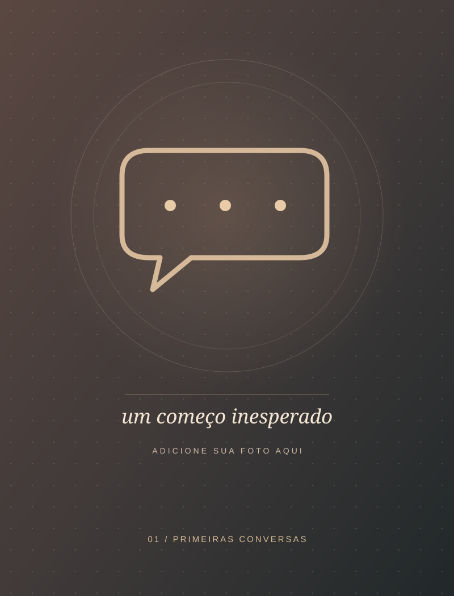
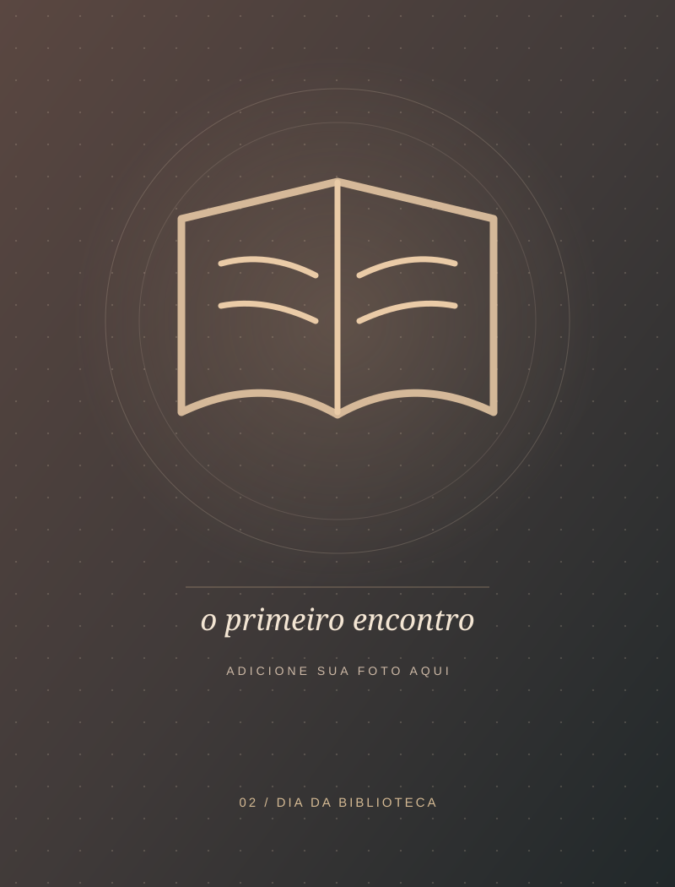
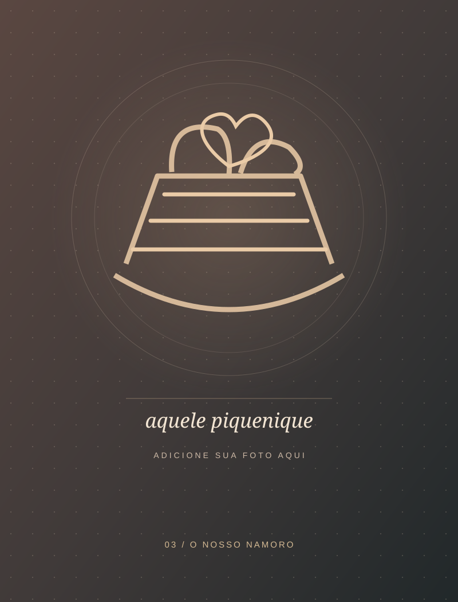
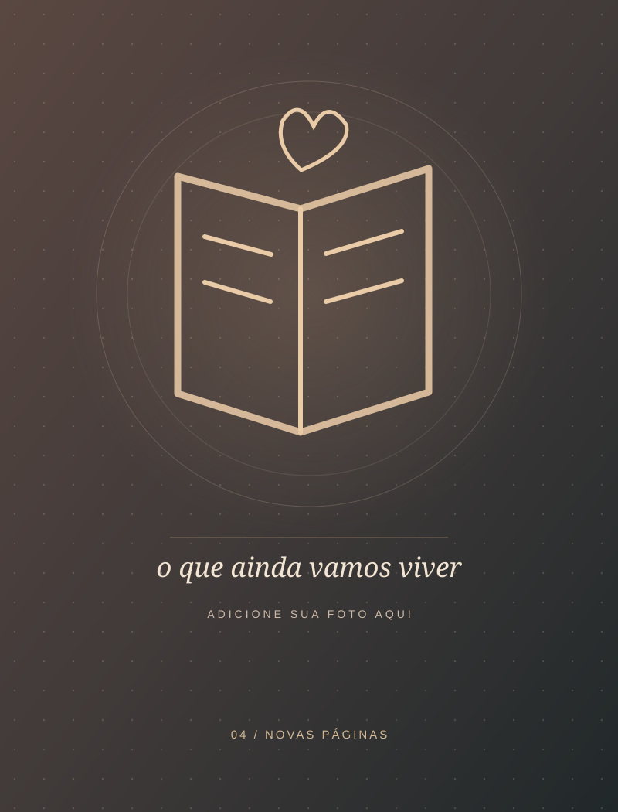

Para quem faz meus dias mais bonitos
Nossa história.
Entre tantas pessoas no mundo, a vida escreveu o nosso encontro.
Alguns capítulos a gente lê.
Outros, a gente vive.
Feito com amor, só para você.
VOL. 01
EST. EM UM ENCONTRO

com um oi.
PRÓLOGO · ANTES DE TUDO
Uma mensagem.
Depois, outra.
Amor, hoje eu queria te contar uma história. Mas não é uma história qualquer. É a nossa.
Quem diria que algumas conversas pelo Instagram poderiam nos trazer até aqui, né?
No começo, eram apenas mensagens, duas pessoas se conhecendo através de uma tela, sem imaginar tudo o que ainda estava por vir.
E, sem a gente perceber, a nossa história já tinha começado.

para o real.
CAPÍTULO I · O ENCONTRO
O dia em que tudo
se tornou real.
Até que chegou o Dia da Biblioteca. Você lembra?
Foi naquele dia que a gente se encontrou pessoalmente pela primeira vez. Depois de tantas conversas pelo celular, finalmente estávamos ali, um diante do outro.
E pensar que aquele encontro seria o começo de tantas lembranças bonitas…
Alguns dias parecem comuns quando acontecem. Depois, se tornam inesquecíveis.

eu escolheria de novo.
CAPÍTULO II · A ESCOLHA
Um piquenique.
Um novo começo.
Ah, aquele piquenique… Acho que você sabe o quanto aquele dia foi especial pra mim.
Foi ali que eu te pedi em namoro. Foi ali que nossa história ganhou um novo capítulo.
De lá pra cá, construímos tantas lembranças: as risadas, as brincadeiras, os dias felizes e até os desafios que enfrentamos juntos.
Se eu pudesse voltar àquele dia, sabendo tudo o que sei hoje, escolheria você novamente. Sem pensar duas vezes.

capítulo é nosso.
CAPÍTULO III · AINDA POR ESCREVER
Algumas histórias
foram feitas para continuar.
E agora chegamos a mais um capítulo. Mas esse é um pouquinho diferente.
Porque, pela primeira vez, eu não vou te contar o que acontece nele. Calma, curiosinha! Hahaha.
Só quero que você saiba que preparei este momento com muito carinho. E que quero continuar criando lembranças, rindo das nossas besteiras e descobrindo a vida ao seu lado.
Se eu pudesse escolher alguém para estar comigo em cada página, escolheria você. Hoje, amanhã e em todos os capítulos que ainda vamos escrever.
30 DE OUTUBRO DE 2026 · NOSSA MANHÃ
E agora, meu amor…
A nossa história
continua.
“Algumas páginas precisam ser vividas antes de serem escritas.”
Eu te amo.
continua…